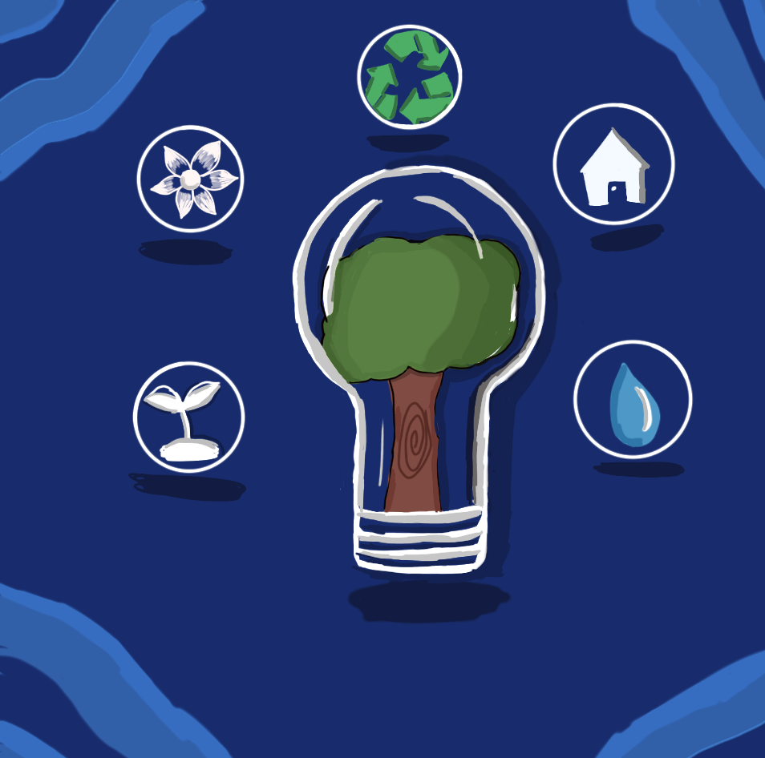
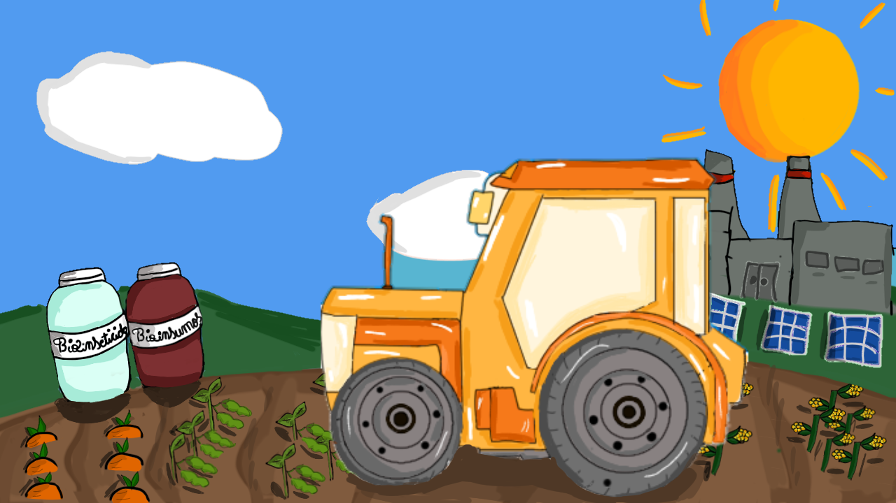
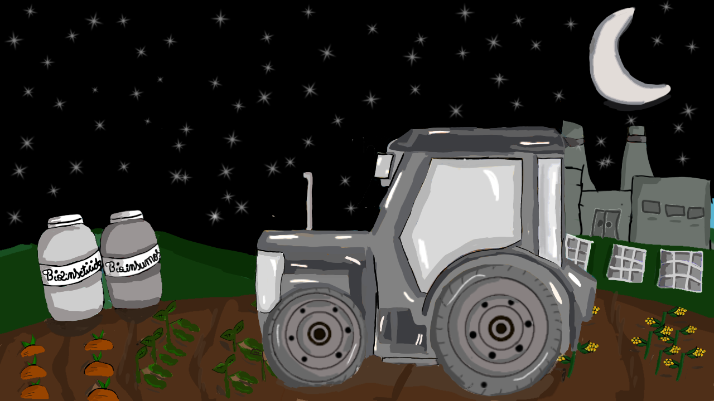
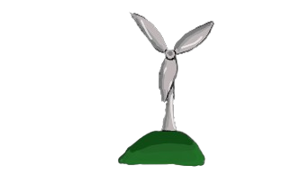
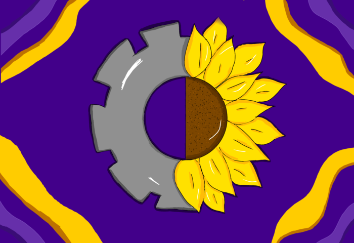
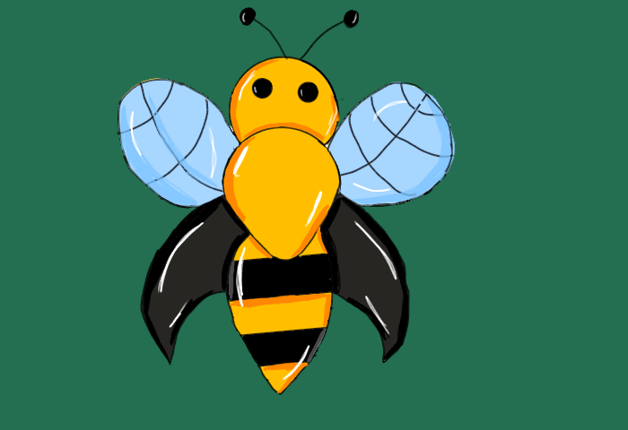
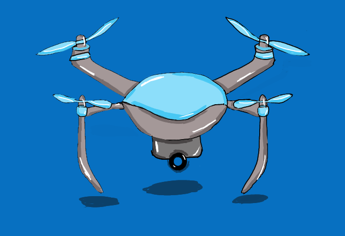
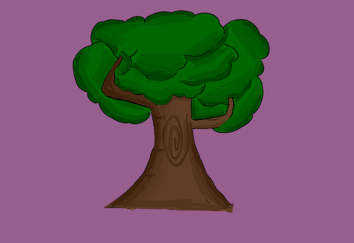

<html lang="en">

<head>
  <meta charset="UTF-8">
  <meta name="viewport" content="width=device-width, initial-scale=1.0">
  <link rel="stylesheet" type="text/css" href="style.css">
  <script src="script.js" defer></script>
  <title>Agro forte: equilibrio entre produção e meio ambiente</title>
  
</head>

<body>
  <main>
  <div class="container"></div>

</html>
<!--seção modais-->
<section>
<h1 id="titulo">Produção com sustentabilidade</h1>
<button id="button" class="btn">Clique</button>
<dialog id="modal">
  <h2>Como ocorre a agro produção sustentável</h2>
  <p>
    Ocorre atráves da concientização dos impactos das<br>ações humanas, da integração de manejo correto do solo,<br>do
    uso de recursos sustentáveis para a plantação e a colheita (como bioinseticidas e bioinsumos)<br>e do descarte de
    elementos não utilizados em locais apropriados.
  </p>
<audio controls>
  <source src="Áudio/como ocorre.opus" type="audio/mpeg"> 
</audio>
  <button id="button_close" class="btnfecha">Fechar</button>
</dialog>

<button id="button2" class="btn2">Clique</button>
<dialog id="modal2">
  <h3>Importância da agro produção sustentável</h3>
  <p2 class="p2">
    É importante pois contribui para a redução de poluentes <br>que impactam diretamente a manutenção do equilibrio
    ecossistêmico, <br>garantindo uma melhor qualidade de vida para a sociedade e<br> preservando a biodiversidade do
    planeta.<br>
  </p2>
  <audio controls>
  <source src="Áudio/Importância.opus" type="audio/mpeg"> 
</audio>
  <button id="button_close2" class="btnfecha2">Fechar</button>
</dialog>
</section>

<!--seção subtítulos-->
<section>
<h4 id="h4">Como ocorre</h4>
<h5 id="h5">Importância</h5>
<h6 id="metodos" class="h6"> Métodos para mitigação dos poluentes</h6>

<section>
<!--seção modo escuro e modo claro-->
<button id="btnNoturno" class="btnNoturno" onclick="modoEscuro()">Modo Escuro</button>
<button id="btnEscondido" class="btnEscondido" onclick="modoClaro()">Modo claro</button>
<div class="p3" id="Elementosol">
  <p3>☀️</p3>
</div>
<div class="p4" id="lua">
  <p4>☾</p4>
</div>
</section>

<!--seção quiz-->
<section>








<div class="Img/retangulo" id="retangulo1"></div>
<div class="Img/retangulo2" id="retangulo3"></div>
<div class="retangulo" id="retangulo"></div>
<div class="retangulo2" id="retangulo2"></div>
</section>

<!--seção quiz-->
<section>
<h7 class="h7" id="h7">Quiz</h7>
<h8 class="h8" id="quizz">Quiz: produção com sustentabilidade</h8>
<div class="retangulo3" id="retanguloquizz"></div>


<button class="btnquizz" id="start">Começar</button>
<h9 class="h9" id="questão">Qual desse é um método de mitigação</h9>
<button class="btnquiz1" id="btnquiz1">Nenhum desses</button>
<button class="btnquiz2" id="btnquiz2">Utilizar fontes renováveis </button>
<button class="btnquiz3" id="btnquiz3">Ulizar fontes não renováveis</button>
<button class="btnquiz4" id="btnquiz4">Utilizar poluentes agrícolas</button>
<button class="Próximo" id="Próximobtn">Próximo</button>

<h10 class="h10" id="questão2">Qual a importância de produzir com sustentabilidade?</h10>
<button class="btnquiz5" id="btnquiz5">Apenas ter prejuízos </button>
<button class="btnquiz6" id="btnquiz6">Para explorar recursos sem necessidade</button>
<button class="btnquiz7" id="btnquiz7">Não tem importância </button>
<button class="btnquiz8" id="btnquiz8">É importante para garantir a manutenção do equilíbrio ecológico</button>
<button class="Próximo2" id="Próximobtn2">Próximo</button>

<h11 class="h11" id="questão3">Como utilizar o solo de maneira correta?</h11>
<button class="btnquiz9" id="btnquiz9">Por meio do manejo incorreto do solo</button>
<button class="btnquiz10" id="btnquiz10">Pelo desmatamento</button>
<button class="btnquiz11" id="btnquiz11">Por queimadas</button>
<button class="btnquiz12" id="btnquiz12">Utilizar bionsumos agrícolas </button>
<button class="Próximo3" id="Próximobtn3">Próximo</button>

<h12 class="h12" id="questão4">Como deve ser feito o descarte de recursos poluentes?</h12>
<button class="btnquiz13" id="btnquiz13">Em locais apropriados para o descarte</button>
<button class="btnquiz14" id="btnquiz14">Em qualquer local</button>
<button class="btnquiz15" id="btnquiz15">Em rios e lagos</button>
<button class="btnquiz16" id="btnquiz16">Descartar o lixo tóxico no lixo comum</button>
<button class="Próximo4" id="Próximobtn4">Resultado</button>

<p5 class="p5" id="Acertos"></p5>
<p6 class="p6" id="p6">Espero que tenha aprendido mais sobre a produção sustentável, obrigado por responder o quiz</p6>
<button class="btnRecomeça" id="Recomeçar">Recomeçar</button>
</section>

<video class="video" width="640" height="360" controls>
  <source src="vídeo/vídeo.mp4" type="video/mp4">
</video>


<!--seção você sabia-->
<h13 id="Vocêsabia" class="h13">Você sabia?</h13>
<div class="retangulo4" id="retangulo4"></div>

<p7 id="abelhafrase" class="p7">Existem as florestas de bolso, elas são matas pequenas que intercalam com plantações
  para aumentar a polinização que contribui para o crescimento da colheita.</p7>
<button id="seguir" class="Seguir">Mais</button>

<p8 id="dronefrase" class="p8">Os drones pastores ajudam a observar o bem-estar do gado e ajudam a encontrar problemas
  no pasto.</p8>
<button id="seguir2" class="Seguir2">Mais</button>

<p9 id="arvorefrase" class="p9">Os sensores de solo são chips que contribuem para o monitoramento da umidade para evitar
  o desperdício de água quando houver irrigação.</p9>
<button id="seguir3" class="Seguir3">Voltar</button>







<!--seção detalhe lateral-->


<!--seção Áudios para acessibilidade-->
<section>
<div class="audioAbelha" id="AbelhaAudio">
<audio controls>
  <source src="Áudio/audio da abelha.opus" type="audio/mpeg">
</audio>
</div>

<div class="audioDrone" id="DroneAudio">
<audio controls>
  <source src="Áudio/áudio do drone.opus" type="audio/mpeg">
</audio>
</div>

<div class="audioÁrvore" id="ÁrvoreAudio">
<audio controls>
  <source src="Áudio/áudio da árvore.opus" type="audio/mpeg"> 
</audio>
</div>
</section>
</main>
</body>

 <!--seção créditos-->
<footer>
  <p10 class="p10" id="p10">Aluna: Julia Daniela Gomes <br> Colégio Estadual José de anchieta </p10>  
</footer>